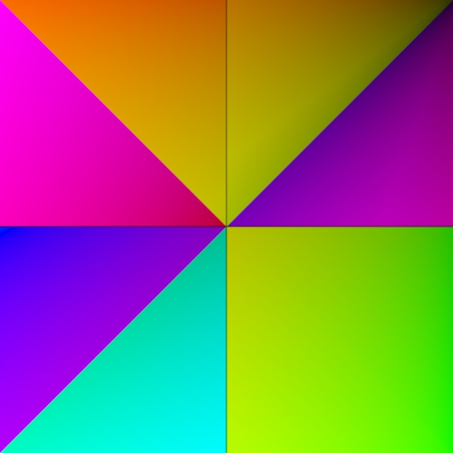

使用颜色着色器的运动图形效果
在本简短教程中，我们将使用 Arnold 的一些颜色着色器来创建一个有趣的效果，然后可以将它用在运动图形动画中。此动画主要由连接到具有关键帧动画的 color_jitter 着色器的 utility 着色器（“对象 ID”(Object ID)模式）驱动。
有关最终场景，请单击此处。
- 首先，创建一个多边形平面。
- 为其指定一个 standard_surface 着色器。
颜色抖动着色器和工具着色器
将 color_jitter 着色器连接到 standard_surface 着色器的 emission_color， 并将 emission_weight 增加到 1。
将 utility 着色器连接到 color_jitter 着色器的 input。 在 utility 着色器中，将 shade_mode 更改为“平面”(Flat)。 这是因为我们只想从工具着色器使用纯色来创建图案。将 overlay_mode 更改为“多边形线”(Polywire)。这将在颜色上叠加一个线框。
在本例中，color_mode 已设置为 uv_coords。 一旦设置动画，这将为我们的图案提供对角线擦拭效果。当然，您可以选择不同的 color_mode， 例如“U 坐标”(U Coords) 或“V 坐标”(V Coords)， 或者完全不同的模式。就是去尝试并体会获取不同技巧的乐趣！
增加 color_jitter 着色器的 hue_max （面）以查看其对 utility 着色器的效果。如果平面没有足够的细分，您始终可以增加平面的 subdivision_iterations 次数。
|  | |||
| 0 | 1 | 2 | 3 |
增加 subdivision_iterations 次数时，会看到更多三角形
颜色校正
我们可以使用 color_correct 着色器更改三角形的颜色。
- 在 color_jitter 和 standard_surface 着色器之间连接 color_correct 着色器。调整 hue_shift 并更改 multiply 颜色。您可以调整 color_correct 着色器的属性，直到获得满意的效果。在本例中，gamma 和 contrast 也已调整。
我们也可以使用 Arnold 中一些其他的颜色着色器来更改颜色。下面是一些使用合成和变换着色器的示例。
 |
|
| 合成 | 变换 |
最后，尝试对 color_jitter 着色器的 gain 和 hue （面）属性设置关键帧。您应该会看到平面的曲面上出现动画效果，因为 utility 着色器的 color_mode 已设置为 uv_coords。
最终着色器网络